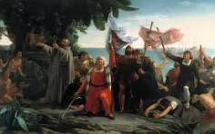

La monarquía compuesta es un término que se refiere a un conjunto de reinos, señoríos y estados, que fue propio de muchas monarquías europeas en la Edad Moderna
Los españoles identificaron que el sistema organizacional del tanhuantinsuyo, que reposaba el poder de los curacas y señores del pueblo. De esta manera, respetaron a los principales, siempre y cuando se convierta al catolicismo y se sometian a la soberania del rey de españa. El sistema de alianza reposo sobre la autoridad que aun mantenian los curacas.
|  |
|---|